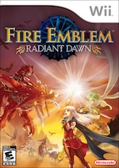

Review #1
Fire Emblem Radiant Dawn
This game, made for the nintendo wii, is one of my favorites. It isn't like the newer fire emblem games, with lots of cutscenes and animations, however it tells a wonderful story. There is character development, surprises in the plot, and overall wonderfully fun gameplay. This game is expensive on the market now, but if you have the money, it's worth a try. Like I said, it's not like the newer fire emblem games, but in many ways it is much better.
Review #2
Final Fantasy VII
This game is another favorite of mine. The first half of the story is very well done, and the second half isn't bad but it can be confusing at times. The gameplay is it's best feature, and was especially good at the time it was made.
If you're a fan of good graphics and have not yet played this game, you should probably look at the remake. Overall it's a really good game that can still be enjoyed even over 20 years later.